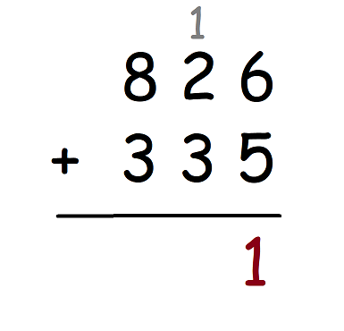

Addition
What is Addition? How do you do it?
Addition is when you take two or more numbers and put them together to create a larger number. It is represented by a + sign. The numbers being added are called addends. The answer is called the sum.
Here's an example. Let's say you have 3 apples. If someone gives you 2 more, then you have to add 2 apples. You this by counting 2 numbers beyond 3. One number after 3 is 4, and two numbers after 3 is 5. Therefore, 3 + 2 = 5.

Practice Problems:
2 + 5 = ?
3 + 7 = ?
8 + 6 = ?
9 + 2 = ?
1 + 4 = ?
Answers:
2 + 5 = 7
3 + 7 = 10
8 + 6 = 14
9 + 2 = 11
1 + 4 = 5
Adding with Two or More Digits (Carrying the 1)
When you add numbers with two or more digits, you want to follow the following steps:
- Line one number on top of the other, making sure that the last digits of each number are lined up in a column.
- Start adding the numbers in each column and writing the sum below.
- If the numbers add up to a number that is 10 or greater, write the second digit of that sum below. Then, in the next column to the left, add a 1 on top. This is called "Carrying the 1."
- Move on to the next column to the left and do the same.
- If you carried the one previously, be share to add that 1 in addition to the numbers in the column.
- Repeat this process until you have done it for all the columns.
- Note that for the last column, you don't need to carry the one. Write the sum as it is.
- The sum will be the number at the bottom
Example:

The final answer is 1161.
For more help, see
Khan Academy's Video on Addition.